6.1 Thao tác với chức năng PivotTables
* Ý nghĩa
Thống kê dữ liệu theo nhiều cấp độ khác nhau với nhiều hình thức đa dạng từ một bảng dữ liệu chính.
* Cách thực hiện
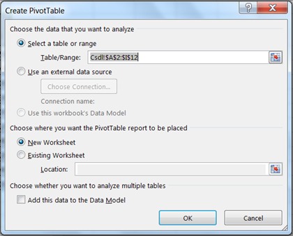
Hình 6.22. Hộp thoại Create PivotTable
- Select a table or range: Cho phép chọn vùng dữ liệu là Sheet hiện hành
- Use an external data source: Cho phép chọn vùng dữ liệu từ file Excel có sẵn
- New Worksheet: Phát sinh bảng thống kê trên sheet mới
- Existing Worksheet: Phát sinh bảng thống kê từ địa chỉ được nhập vào.
Click Ok, xuất hiện hộp thoại cho phép kéo thả các field là điều kiện kiện thống kê.
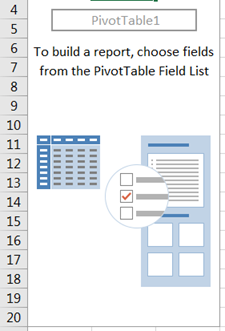
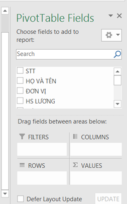
Hình 2.23. Hộp thoại PivotTable Field List
- Vùng ROWS và COLUMNS sẽ chứa field làm điều kiện thống kê.
- Vùng VALUES chứa những field số liệu muốn thống kê
Drag chuột kéo field vào vùng tương ứng, kết quả sẽ tự động cập nhật tạo thành bảng thống kê.
Ví dụ: Kết quả thống kê theo nhóm đơn vị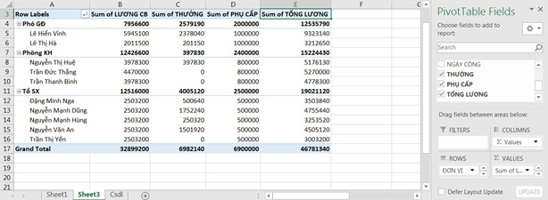
Hình 6.24. Kết quả thống kê PivotTable
6.2 Thao tác với chức năng Consolidate
* Ý nghĩa
Consolidate cho phép hợp nhất từ nhiều vùng dữ liệu liệu nguồn (Sources) và hiển thị kết quả trong vùng dữ liệu đích (Destination).
* Thực hiện
Giả sử công ty ABC có 3 cửa hàng, mỗi cửa hàng có một bảng báo cáo doanh thu năm 2019. Công ty có nhu cầu tổng hợp các báo cáo của 3 cửa hàng thành một báo cáo doanh thu năm 2019 của công ty.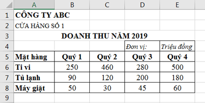
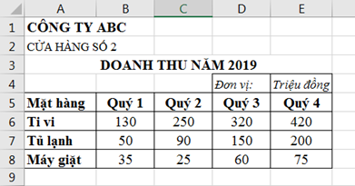
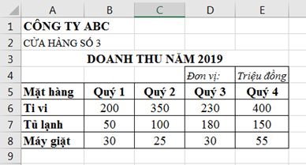
o Function: Chọn hàm sử dụng (Sum, Min, Max, …), thông thường khi tổng hợp dữ liệu ta chọn hàm Sum để tính tổng.
o Reference: Để tham chiếu lần lượt địa chỉ của các vùng dữ liệu nguồn.
o Browse: Để chọn dữ liệu từ tập tin khác.
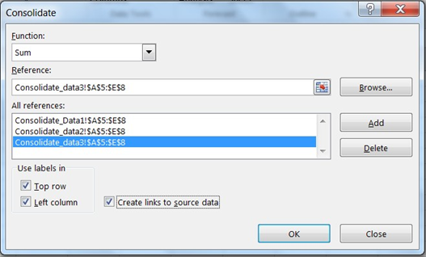
Hình 6.25. Hộp thoại Consolidate
- Use labes in:
o Top row: nếu muốn sử dụng lại tên cột của vùng nguồn,
o Left column: nếu muốn sử dụng lại các giá trị của cột đầu tiên của vùng nguồn. (Ở đây là giá trị của cột Mặt hàng).
- Create links to source data: Nếu muốn dữ liệu hợp nhất được cập nhật mỗi khi có thay đổi ở vùng dữ liệu nguồn.
Kết quả thu được: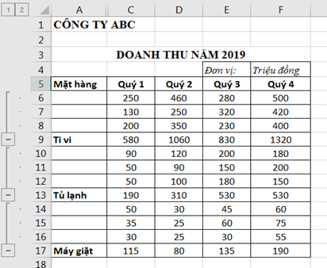
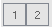
để thay đổi chế độ hiển thị kết quả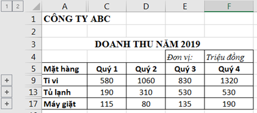
Đồ thị là một dạng biểu diễn dữ liệu trực quan, sinh động giúp người quản lý dữ liệu, người xem dễ dàng nắm bắt các số liệu theo các tiêu chí biểu diễn dữ liệu được đặt ra trước đó.
Đồ thị giúp trình bày dữ liệu của bảng tính bằng cách hiển thị các sự kiện và con số dưới dạng hình ảnh trực quan rất có ý nghĩa.
Đồ thị cho phép biểu diễn sự tương quan của dữ liệu trong bảng tính trên phương diện đồ họa, giúp biến đổi các hàng, cột thông tin thành những hình ảnh có ý nghĩa.
Đồ thị giúp chúng ta so sánh số liệu trong bảng tính một cách trực quan, tránh việc phải đọc các số liệu chi chít trên bảng tính.
Đồ thị giúp tiên đoán được sự phát triển của dữ liệu mô tả trong bảng, làm cho bảng trở nên sinh động và thuyết phục hơn.
* Vẽ đồ thị
o Chọn vùng dữ liệu cần biểu diễn đồ thị.
o Chọn kiểu đồ thị từ Ribbon -> Insert -> nhóm Charts. Mỗi nhóm đồ thị sẽ cónhiều kiểu khác nhau.
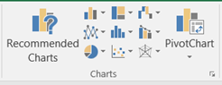
o Hoàn tất layout cho đồ thị. Layout của đồ thị là cách bố trí các thành phần trong đồ thị sao cho đẹp mắt, dễ xem. Thực hiện bằng cách chọn đồ thị -> Ribbon Design -> Chart Layouts -> Quick Layout -> Chọn cách bố trí thích hợp.
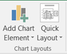
§ Điều chỉnh chuỗi hiển thị dữ liệu từ dòng sang cột và ngược lại trong trường hợp ở Bước 3 chưa hiển thị dạng như mong muốn. Thực hiện: chọn đồ thị à Ribbon Design -> Data -> Switch Row/Column.
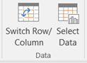
Chọn dạng đồ thị khác để phù hợp hơn với dữ liệu biểu diễn. Chọn đồ thị à Ribbon Design à Type àChange Chart Type
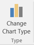
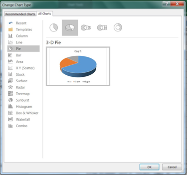
Hình 6.26. Hộp thoại Change Chart Type
o Chỉ có một chuỗi dữ liệu.
o Không có giá trị nào trong dữ liệu là giá trị âm.
o Không có giá trị nào trong dữ liệu là bằng không.
o Không có quá 7 thể loại và tất cả các thể loại này đều biểu thị một phần giá trị của toàn bộ hình tròn.
* Bar: biểu đồ thanh. Sử dụng khi:
o Các nhãn trục quá dài.
o Các giá trị được biểu thị là các quãng thời gian
- Muốn thay đổi thang tỷ lệ của trục ngang.
- Muốn đặt trục đó theo tỷ lệ lô-ga-rit.
- Các giá trị của trục ngang được cách quãng không đều.
- Có nhiều điểm dữ liệu trên trục ngang.
- Muốn điều chỉnh thang đo trục độc lập của biểu đồ tán xạ để cung cấp thêm thông tin về các dữ liệu có chứa cặp hoặc nhóm giá trị.
- Muốn biểu thị điểm giống nhau giữa các tập hợp dữ liệu lớn thay vì sự khác biệt giữa các điểm dữ liệu.
- Muốn so sánh nhiều điểm dữ liệu mà không liên quan đến thời gian, càng nhiều dữ liệu được đưa vào thì càng đưa ra những so sánh tốt hơn.
- Stock: biểu đồ chứng khoán. Thường dùng trong việc minh họa những dao động lên xuống của giá cổ phiếu hay lượng mưa hàng ngày, nhiệt độ hàng năm.
- Surface : Biểu đồ bề mặt. Sử dụng để biểu diễn mối quan hệ giữa các lượng dữ liệu lớn (trường hợp dạng biểu đồ khác khó xem)
- Radar : So sánh các giá trị tổng hợp của một vài chuỗi dữ liệu
- Combo : Biểu đồ này kết hợp 2 hay nhiều dạng biểu đồ khác nhau để biểu diễn cho nguồn dữ liệu đa dạng.
* Điều chỉnh màu sắc cho đồ thị. Chọn đồ thị -> Ribbon Design -> Change Colors -> Bảng màu xuất hiện và chọn màu tùy thích.
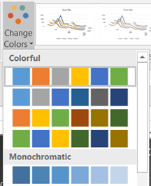
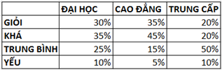
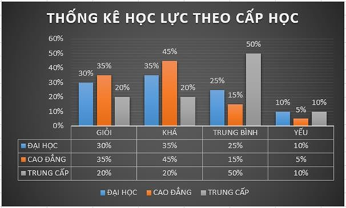
Hình 6.27. Đồ thị thống kê dạng Column
* Các thao tác trên đồ thị
Di chuyển đồ thị
Chọn đồ thị -> Chọn Ribbon Design -> Chọn biểu tượng Move Chart, xuất hiện hộp thoại Move Chart
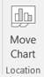
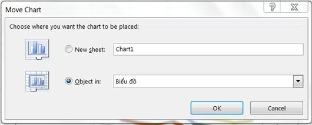
Thay đổi kích thước đồ thị
Đưa chuột vào đường bao của đồ thị, kéo chuột di chuyển đến kích thước mong
Sao chép đồ thị
Chọn đồ thị -> nhấn Ctrl-C, di chuyển đến nơi đặt -> nhấn Ctrl-V
Xóa đồ thị
Chọn đồ thị -> nhấn Delete.
Hiệu chỉnh đồ thị
Chọn đồ thị -> R_Click trên đồ thịà chọn Format Chart Area -> chọn thành phần muốn hiệu chỉnh.
6.3.2 Đánh giá dữ liệu bằng Sparklines
Sparklines cách nhanh và đơn giản nhất để thêm thành phần đồ thị cỡ nhỏ (mini) trong một ô (cell). Sparklines tập trung vào các giá trị tối đa và tối thiểu bằng các màu sắc khác nhau để phân tích xu hướng dữ liệu như: tiêu dùng, doanh thu…Ví dụ, ta có bảng dữ liệu sau, dùng Sparklines để xem tỉ lệ lao động theo mỗi năm của từng nhóm tuổi. Tùy thuộc vào dữ liệu mà ta sẽ chọn dạng Sparklines là Column/Line/WinLoss.
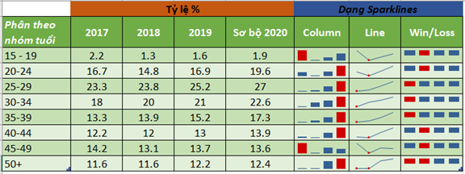
Hình 6.28. Phân tích dữ liệu bằng Sparklines
Cách thực hiện
Chọn dòng dữ liệu muốn thống kê. Vào INSERT -> Sparklines -> chọn dạng hiển thị (Column, Line hoặc Win/Loss), xuất hiện màn hình Create Sparklines.
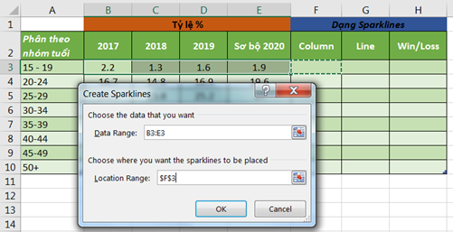
- Data Range: Chọn vùng dữ liệu muốn thống kê
- Location Range: Chọn vị trí đặt Sparklines
- Ấn OK để hoàn tất.
Hiệu chỉnh Sparklines
Chọn ô chứa sparklines cần hiệu chỉnh, R_Click -> Sparklines Tools -> chọn nhóm cần hiệu chỉnh:
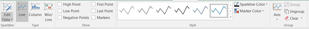
- Sparkline: hiệu chỉnh vùng dữ liệu hay vị trí đặt sparklines
- Type: điều chỉnh dạng sparklines
- Show: chọn cách hiển thị điểm trong sparklines.
- Style: chọn kiểu hiển thị cho loại sparklines và màu sắc
- Group: nhóm sparklines hay gỡ bỏ các sparklines.